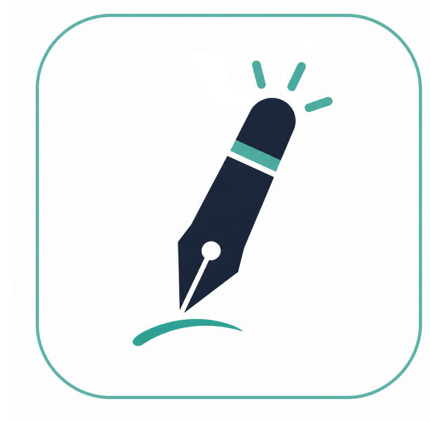

متاح
فتح مدرستي
فتح منصة مدرستي
رابط سريع للانتقال إلى منصة مدرستي واستخدام إضافة تحضيري داخل صفحات التحضير.
الفائدة للمعلم: يبدأ من نفس المكان الذي يعمل فيه يوميًا بدون خطوات إضافية.

تحضيري مساعد المعلم الذكيمركز أدوات تحضيري
هذه الصفحة تعرض ما يمكن للمعلم استخدامه الآن بشكل منفصل عن الميزات المستقبلية. الهدف أن تعرف بالضبط ما هو جاهز وما الذي لا يزال ضمن خطة التطوير.
هذه الميزات هي التي يعتمد عليها مسار تحضيري الحالي: حساب، إضافة، تحليل صفحة التحضير، معاينة، ثم تعبئة بعد الاعتماد.
رابط سريع للانتقال إلى منصة مدرستي واستخدام إضافة تحضيري داخل صفحات التحضير.
الفائدة للمعلم: يبدأ من نفس المكان الذي يعمل فيه يوميًا بدون خطوات إضافية.
تجهيز مسودة تحضير للدرس بناءً على بيانات الصفحة والمحتوى المتاح في النظام.
الفائدة للمعلم: يقلل وقت كتابة التحضير ويعطي نقطة بداية قابلة للمراجعة.
إضافة تظهر داخل صفحات التحضير المناسبة في مدرستي، وتربط الحساب بالاشتراك والتحضير.
الفائدة للمعلم: يعمل التحضير داخل بيئة مدرستي بدل النقل بين صفحات كثيرة.
يعرض التحضير المقترح قبل أن يتم إدخاله في حقول منصة مدرستي.
الفائدة للمعلم: يبقى القرار بيدك، وتراجع المحتوى قبل اعتماده.
حفظ واسترجاع التحاضير المرتبطة بحساب المعلم داخل النظام.
الفائدة للمعلم: لا تبدأ من الصفر في كل مرة، ويمكنك الرجوع للتحاضير السابقة.
إنشاء حساب تحضيري، اختيار المرحلة والمادة، ثم بدء التجربة من نفس المسار.
الفائدة للمعلم: تختبر الورك فلو قبل الاشتراك المدفوع.
هذه أفكار ضمن خطة التطوير، لكنها ليست جاهزة للاستخدام الآن، لذلك تظهر منفصلة عن الميزات الأساسية.
تقسيم الدروس على الأسابيع وربطها بالخطة الدراسية.
الفائدة للمعلم: تنظيم التحضير الأسبوعي مسبقًا عند اكتمال الميزة.
تصدير التحاضير والتقارير بصيغة قابلة للطباعة والمشاركة.
الفائدة للمعلم: تجهيز ملفات مرتبة للمراجعة أو التوثيق.
توليد أنشطة وأسئلة قصيرة مرتبطة بالدرس والمهارة.
الفائدة للمعلم: تحويل التحضير إلى نشاط تعليمي قابل للاستخدام.
ربط الكتب والأدلة بالمادة ليستخدمها النظام كمراجع للتحضير.
الفائدة للمعلم: رفع جودة التحضير بالاعتماد على مصادر منظمة.
قراءة النتائج وتحويلها إلى ملخص ونقاط تدخل تعليمية.
الفائدة للمعلم: تحديد الفجوات وربطها بخطة علاجية مستقبلًا.
تجهيز بيانات الدرجات والمهارات بصيغ تساعد على إدارتها لاحقًا.
الفائدة للمعلم: تقليل تكرار الإدخال بين الأنظمة عند اكتمال التكامل.
لم نجد ميزة بهذا الاسم.